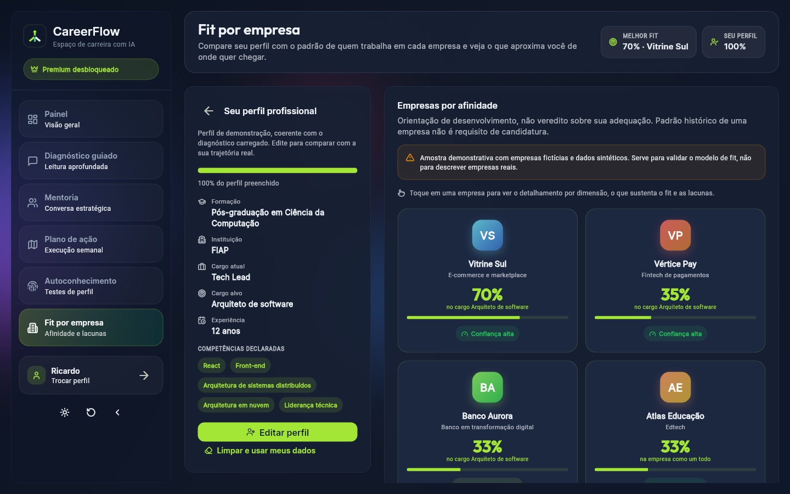
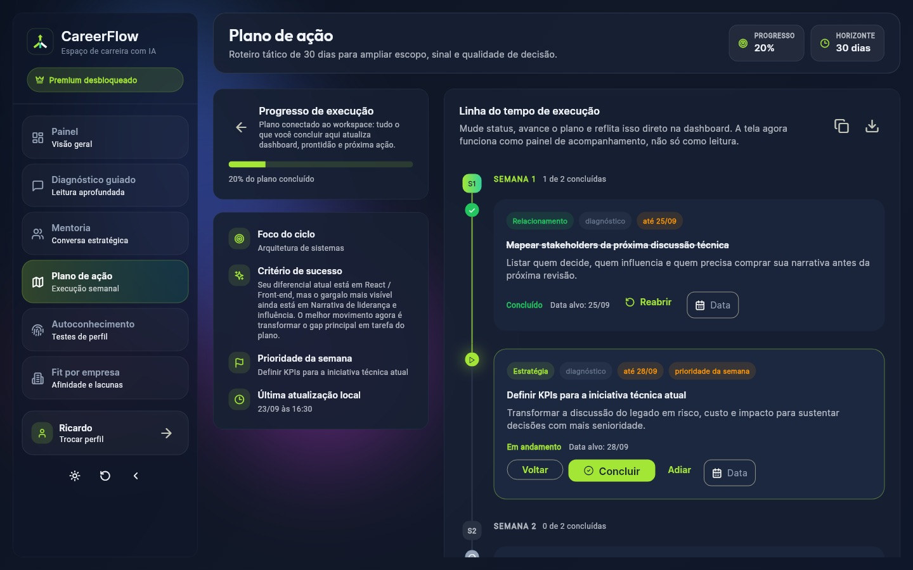
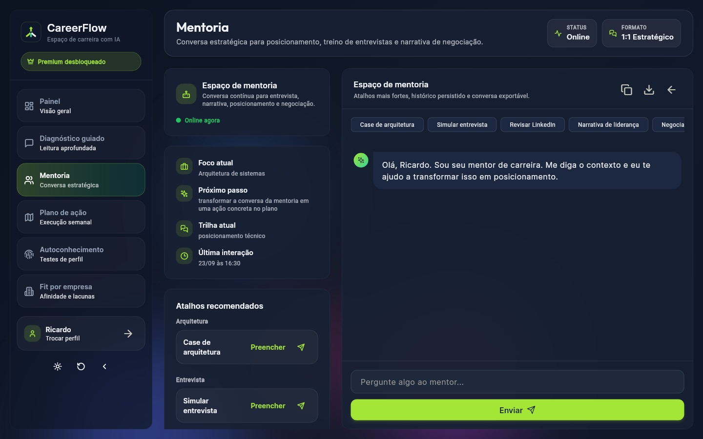
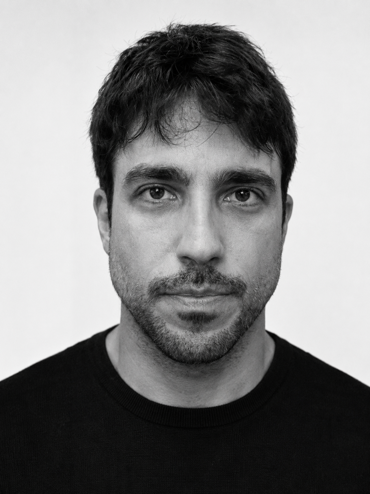
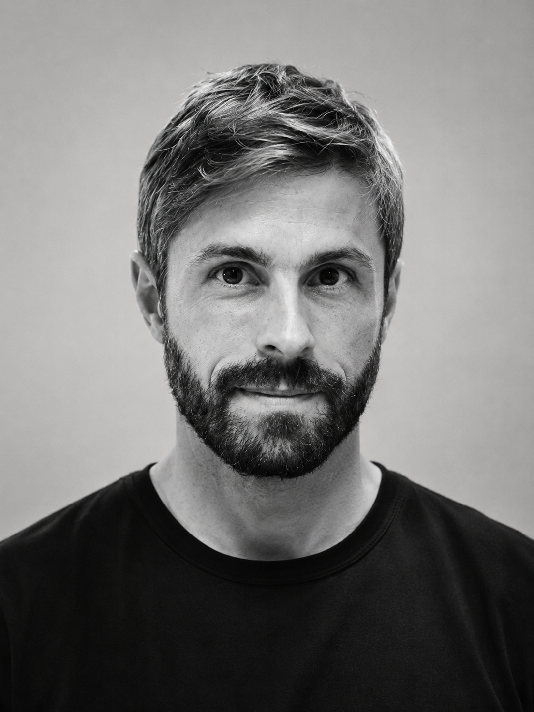
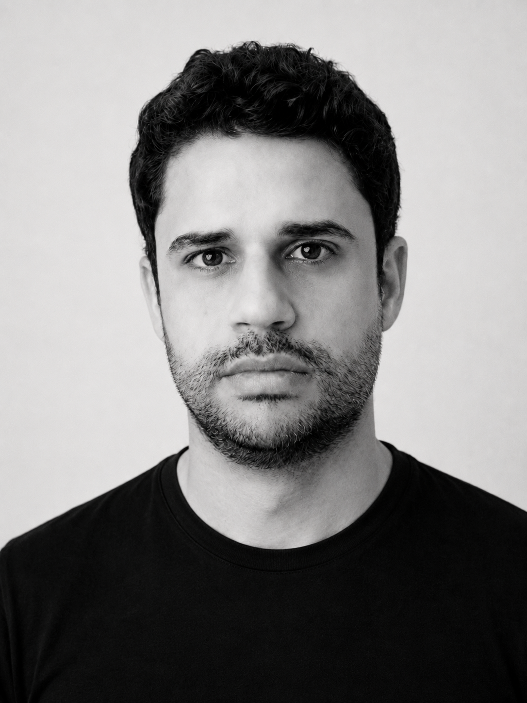

CareerFlow AI · TCC MBA FIAP 2026
Um plano de carreira com IA para profissionais sêniores de tecnologia. Em um dia, não em meses de mentoria.
Luiz Ihara · Filipe Fragoso · Daniel Caminha · Pedro Martins
01
O herói desta história não somos nós
38 anos. Tech lead. 12 anos de carreira.
Ele quer crescer. Só não sabe para onde: virar gestor ou virar referência técnica?
Rota A · Gestão
Tech lead → coordenação
Pessoas, negociação, conflitos: o que a cadeira exige?
?
Rota B · Especialista
Tech lead → staff / arquiteto
Carreira em Y: quais sinais técnicos o mercado pede?
Persona que representa as duas rotas do público-alvo · CareerFlow AI
02
O problema · o Ricardo não está sozinho
516 mil
profissionais de TI de 35 a 44 anos consideraram ou fizeram uma transição de carreira no último ano.
Tensão
A IA mudou o que a próxima cadeira exige.
Mais de 36% já estudam ferramentas de IA para a carreira.
Risco
Decidir no escuro custa anos na trilha errada.
Cursos soltos e LinkedIn ajustado por intuição.
Urgência
A ajuda que funciona não escala.
Mentoria humana: R$ 1,5 mil a R$ 6 mil por mês.
Fontes: Brasscom, Relatório Setorial 2025 · Stack Overflow Developer Survey 2025 (faixa 35–44 como proxy)
03
A solução
Perfil comportamental e conquistas
+
Mercado real: empresas, vagas e quem chegou lá
+
Coach de IA que cobra avanço toda semana
Antes
Cursos soltos, currículo por intuição, decisão no escuro.
Depois
Empresas com fit, vagas abertas e a meta desta semana.
CareerFlow AI · a solução
04
Diferencial competitivo
01
Leituras comportamentais revelam forças, motivações e como Ricardo trabalha.
02
Uma entrevista sobre conquistas, impasses e objetivos revela o que o currículo não mostra.
03
O diagnóstico encontra empresas e vagas; vira um plano de ação com metas e check-ins semanais.
Protótipo navegável · dados de demonstração
05
Já funciona
70% de fit com a empresa-alvo, e por quê
1 meta clara para esta semana
24/7 um coach que conhece o plano dele
careerflow.com.br



Protótipo navegável em careerflow.com.br · dados de demonstração
06
Por que agora
R$ 1.500
por mês: o piso de uma mentoria humana
R$ 40
custo de IA de um Plano de Carreira completo
IA generativa barata o bastante para analisar perfil e mercado de cada pessoa.
Dados abertos de empresas, vagas e rankings para cruzar com o perfil.
Uma geração de sêniores forçada a se reposicionar ao mesmo tempo.
Custo de IA estimado por etapa na reunião de produto de 30/08/2026 · modelo financeiro v2
07
Mercado · calculado de baixo para cima
TAM
3,24 mi
profissionais no macrossetor de TIC no Brasil
SAM
949 mil
entre 35 e 44 anos
Em movimento
516 mil
em transição
SOM · Ano 3
2.873
compram o Plano · R$ 1,49 mi
A meta de 2.873 compradores supera 0,5% desse grupo. O SOM vem de diagnósticos por mês × conversão; preço e assinatura entram na projeção de receita.
Fontes: Brasscom, Relatório Setorial 2025 · Stack Overflow Developer Survey 2025 · modelo financeiro v2
08
Modelo de negócio
Diagnóstico inicial
Grátis
Em 5 minutos: perguntas básicas e um raio-x do perfil e do mercado.
Teste + Plano de Carreira
R$ 197
Pagamento único: teste comportamental completo, reflexão guiada e plano. 1º mês incluso.
Assinatura opcional
R$ 49/mês
Após o mês incluso: check-ins, plano atualizado e novas vagas.
CVs e entrevistas
R$ 29–49
Por uso: CV ajustado à vaga ou entrevista simulada, quando precisar.
A margem da compra inicial cobre o custo de aquisição (CAC). Assinatura e serviços avulsos são escolhas do cliente.
Preços do Ano 1 · modelo financeiro v2
09
Tração e validação
| Dimensão | O que já temos | Meta de corte do piloto |
|---|---|---|
| Aquisição | 11 respostas do público-alvo | +10 entrevistas e teste do preço de R$ 197 |
| Conversão | Protótipo navegável, 9 telas | ≥ 6% dos diagnósticos viram Plano |
| Retenção | PDI e check-in semanal desenhados | ≥ 35% seguem na assinatura |
| Monetização | Custo de IA estimado por etapa | ≤ 5% de reembolso · ≤ R$ 40 de IA por Plano |
Se o piloto bater os quatro números, o modelo está validado. Se não bater, sabemos exatamente qual premissa refazer.
Estrutura de tração: aquisição, conversão, retenção e monetização
10
Unit economics e projeção · 3 anos
4,3×
LTV / CAC no Ano 3
CAC de R$ 140, coberto pela margem de R$ 210 da primeira compra.
R$ 66 mil
Ano 1
R$ 465 mil
Ano 2
R$ 1,57 mi
Ano 3
83% de margem bruta
Mês 31 · EBITDA positivo
R$ 750 mil de capital externo
Receita anual projetada · modelo financeiro v2, 36 meses, planilha FIAP
11
Equipe
Somos o nosso próprio cliente: quatro profissionais sêniores que já enfrentaram a decisão do Ricardo.

Luiz Ihara
CTO · Tecnologia
17 anos em engenharia
ex-Staff na XP Inc.
Filipe Fragoso
CPO · Produto
Engineering Manager no Nubank
ex-Mercado Livre

Daniel Caminha
CSO · Ciência Comportamental
Psicólogo e professor FDC
cofundador de HRTech

Pedro Martins
CFO · Finanças
CFA · 12 anos em finanças
ex-BTG Pactual
MBA FIAP 2026 · orientação: Prof. Ricardo Esposto
12
O pedido
Uso do Ano 1 · R$ 252 mil com os sócios
43% Equipe
36% Produto e tecnologia
14% Aquisição de clientes
7% Administrativo e jurídico
Os quatro números que destravam a seed
≥ 6% diagnóstico → Plano
≥ 35% Plano → assinatura
≤ 5% de reembolso em 7 dias
≤ R$ 40 de IA por Plano
→ seed de R$ 600 mil no Ano 2
R$ 150 mil anjo + R$ 150 mil dos sócios · governança: [acordo de sócios, vesting e cap table antes do aporte]
13
Experiência é potência. Direção é movimento.
careerflow.com.br
Obrigado · Luiz Ihara · Filipe Fragoso · Daniel Caminha · Pedro Martins
14
Apêndice · perguntas da banca
Ele não tem dados estruturados de empresas, vagas e referências, nem acompanha um PDI. O usuário teria que montar tudo sozinho, toda vez. Nós entregamos o plano pronto e cobramos a execução.
Mentoria humana (R$ 1,5 a 6 mil por mês) e ferramentas de currículo e vagas. Nenhuma junta diagnóstico, plano e acompanhamento. [cite aqui o concorrente analisado pelo grupo]
O próprio usuário envia o PDF do LinkedIn, sem raspagem. Perfis de referência são anonimizados, e a visibilidade para headhunters só existe com opt-in.
Slide de reserva: use só se a pergunta aparecer
A1
Apêndice · perguntas da banca
No Ano 1 a aquisição é orgânica, com conteúdo dos fundadores no LinkedIn (CAC de R$ 120). No Ano 3, R$ 140 contra R$ 210 de margem do Plano: a primeira compra paga o CAC.
Está no modelo: 5% de reembolso. Liberação gradual do Plano e política clara, validadas com assessoria jurídica antes de escalar.
O caixa mínimo é de R$ 90 mil no fim do Ano 1, com 7,2 meses de runway. A seed de R$ 600 mil entra no início do Ano 2, condicionada aos quatro números do piloto.
Slide de reserva: use só se a pergunta aparecer · detalhes na planilha FIAP v2
A2